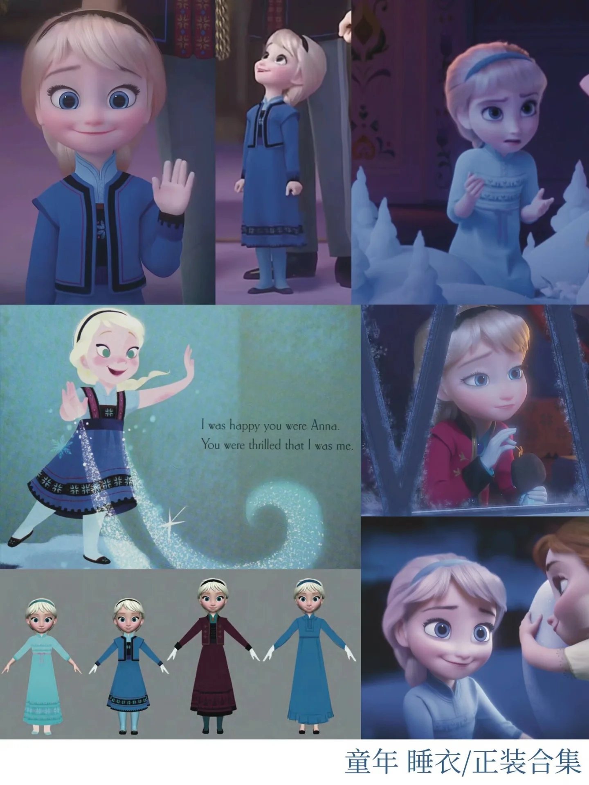
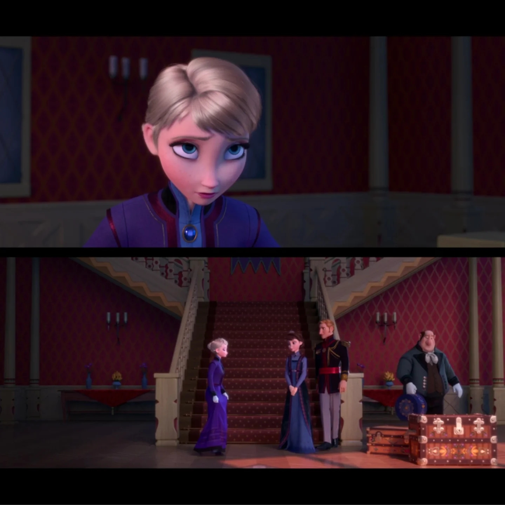
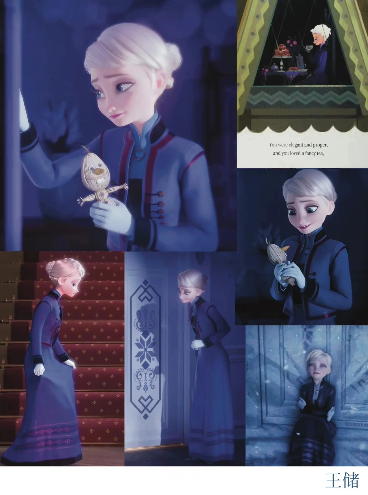
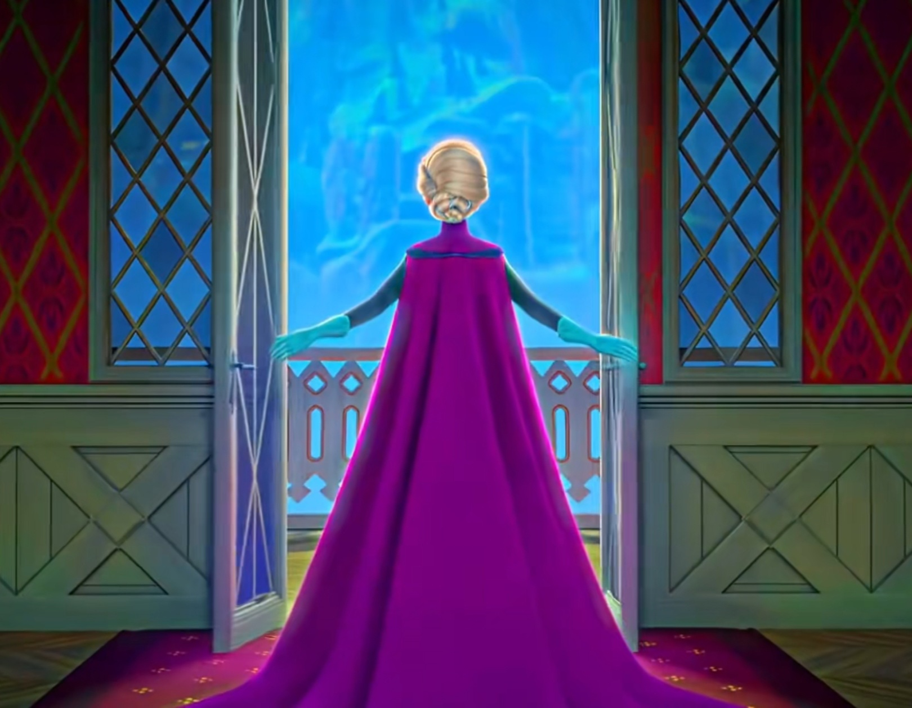
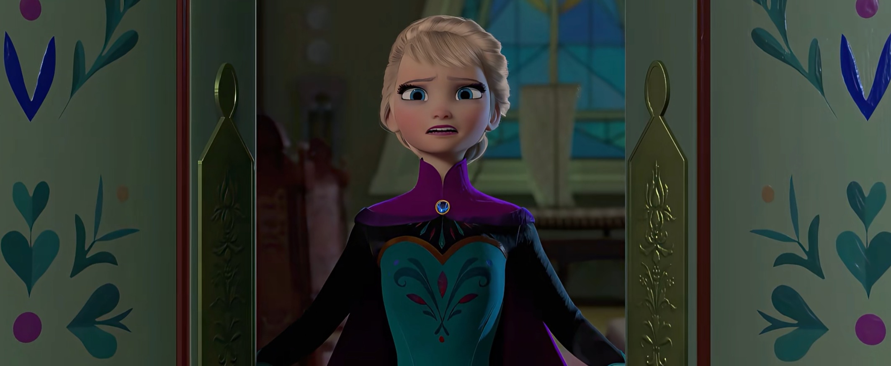
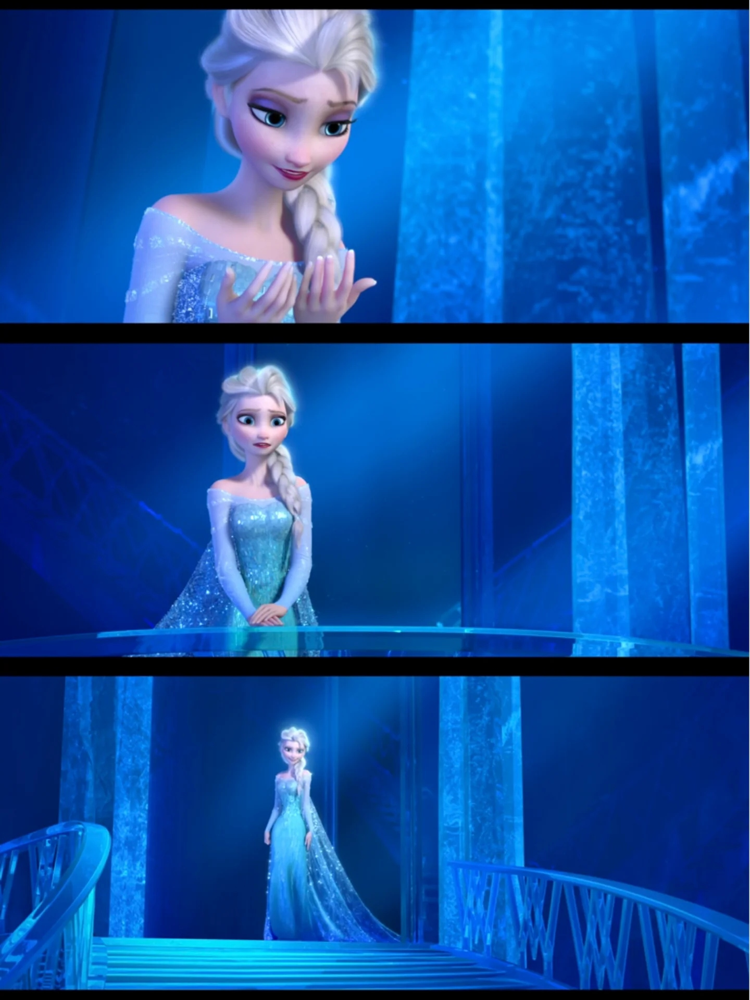
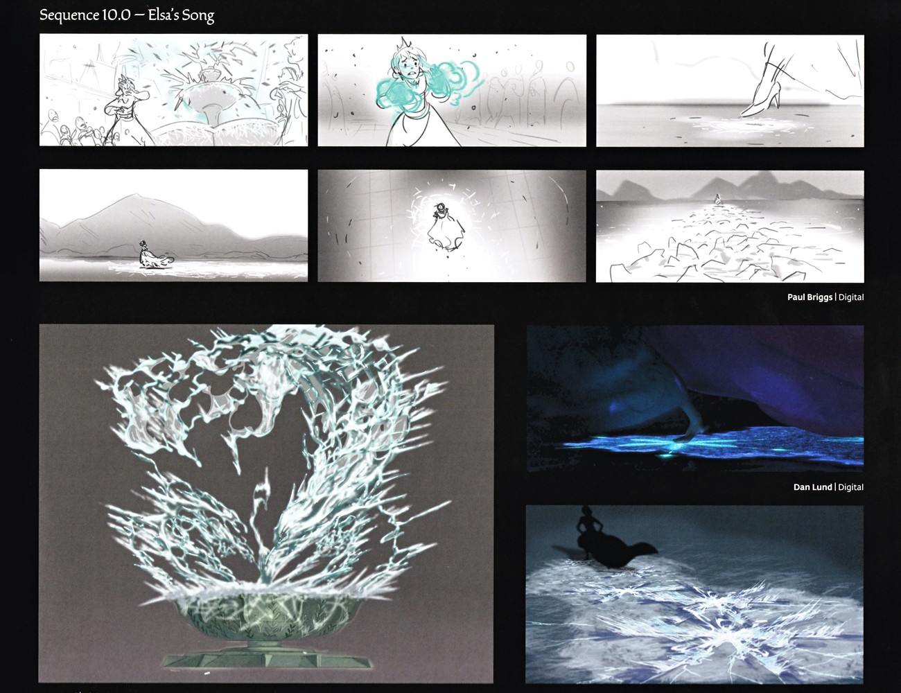

F1 造型志 · 6 套时间线




📖 这一页讲什么
F1 里艾莎的造型是一条清晰的「情绪时间线」——每一身都对应她人格的一个阶段。本页按电影时间顺序，把艾莎的 6 套代表性造型排开，每套标注设计含义。
顺序：童年（魔法意外前）→ 王储/丧服（父母海难后）→ 加冕礼服（克制的冠）→ 逃离礼服（加冕变体）→ 冰雪女王裙（Let It Go）→ 再见造型（F1 结尾）。

🧸 童年造型：魔法还没成为负担
童年艾莎的造型是「暖」的——深色短发、紫色或蓝色小斗篷、城堡大厅里和安娜玩雪的欢快身影。那是魔法对她而言还是「和妹妹的秘密游戏」的阶段，也是她还会笑、还愿意靠近人的阶段。父母让她戴上手套，是这条时间线第一个转折——从此「童年」就结束了。

🕯️ 王储/丧服造型：把悲伤穿在身上
父母在海难中离世后，艾莎换上深蓝/深紫的丧服，提前进入了「王储」的沉重身份。这是她第一次独自面对「没有人替我掩护」的处境：没有父母挡在前面，也没有加冕典礼的仪式感。丧服的色调和剪裁都在说——她提前长大了。
👑 加冕礼服：克制的「conceal」


加冕日的绿裙配紫披风，端庄、厚重、被束得紧紧的——这正是「藏起自己」的视觉化：每一寸都为了「看起来正常」而设计，而不是为了她自己。礼服的美，是一种带着镣铐的美。
💨 逃离礼服：加冕礼服的「奔跑态」
按官方造型清单，逃离阿伦黛尔时的礼服是加冕礼服的一个变体（色调偏浅蓝）。（VP 公共图库未收录此场景独立剧照，可参考上方加冕礼服图片。）逃离时披风散开、长裙拖地，被风雪和恐惧一起撕扯——这不是新造型，而是「同一身礼服的崩塌态」。

❄️ 冰雪女王裙：释放的「reveal」
北山之上，她甩掉手套与王冠，换上冰蓝长裙与冰蕾丝披风。这一身是「做自己」的视觉化：飘逸、通透、棱镜般流光。设定集记载，Mike Giaimo 给「雪后」最初设计的惊艳冰制蕾丝披风「That cape set the bar very high」——冰雪女王裙，是这套设计的完成版。


🌸 再见造型（F1 结尾）：放下的艾莎
结尾姐妹滑冰时艾莎穿的，是冰雪女王裙的「柔化版」——同样飘逸，但色调更暖、更通透，披肩长发替代了冰晶皇冠。它对应的不是「释放」，而是「放下」：魔法不再需要隐藏，艾莎也不再需要用冰雪把自己包起来。（注：VP 公共图库未收录 F1 结尾滑冰场景的独立剧照，可参考上方冰雪女王裙想象此造型的柔化效果。）